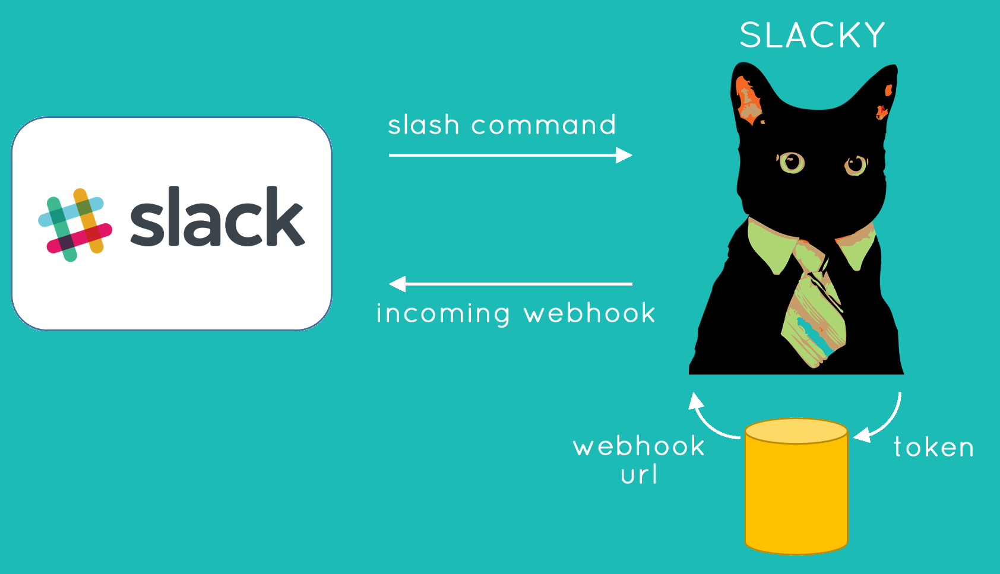

Practical Pedestal/Swagger: Slack integration

slacky-server.herokuapp.com
 oliyh/slacky
oliyh/slacky
Created by Oliver Hine / @oliyh
Slack
A developer-friendly chat service

Memes!
"an idea, behavior, style, or usage that spreads from person to person within a culture"
"also cats"

The Slack "Slash" command
POST
token=gIkuvaNzQIHg97ATvDxqgjtO
team_id=T0001
team_domain=juxt
channel_id=C2147483705
channel_name=general
user_id=U2147483697
user_name=frankie
command=/meme
text=rich hickey | simple | made complexpedestal-swagger
Deserialisation, coercion and related error handling
(s/defschema SlackRequest
{(req :token) s/Str
(req :team_id) s/Str
(req :team_domain) s/Str
(req :channel_id) s/Str
(req :channel_name) s/Str
(req :user_id) s/Str
(req :user_name) s/Str
(req :command) s/Str
(req :text) s/Str})
(swagger/defhandler slack-meme
{:summary "Responds asynchonously to
Slash commands from Slack"
:parameters {:formData SlackRequest}
:responses {200 {:schema MemeUrl}}}
[{:keys [form-params] :as request}]
(let [text (:text form-params)]
{:status 200
:body (meme/generate-meme text)))
Routing and interceptors
(swagger/defroutes api-routes
{:info {:title "Slacky"
:description "Memes and more for Slack"
:externalDocs {:description "Find out more"
:url "https://github.com/oliyh/slacky"}
:version "2.0"}
:tags [{:name "meme"
:description "All the memes!"}]}
[[["/api" ^:interceptors [(swagger/body-params)
bootstrap/json-body
(swagger/coerce-request)
(swagger/validate-response)]
["/slack"
["/meme" ^:interceptors [(annotate {:tags ["meme"]})]
{:post slack-meme}]]
["/swagger.json" {:get [(swagger/swagger-json)]}]
["/*resource" {:get [(swagger/swagger-ui)]}]]]])
Swagger UI

Meme generation

Meme generation

Meme generation

Responding to Slack
 api.slack.com/incoming-webhooksAuthentication interceptor
(swagger/defbefore authenticate-slack-call
{:description "Ensures caller has registered an incoming webhook"
:parameters {:formData {:token s/Str}}
:responses {403 {}}}
[{:keys [request response] :as context}]
(let [db (:db-connection request)
token (get-in request [:form-params :token])
account (accounts/lookup-slack-account db token)]
(if-let [webhook-url (:key account)]
(update context :request merge {::slack-webhook-url webhook-url
::account-id (:id account)})
(-> (terminate context)
(assoc :response
{:status 403
:headers {}
:body (str "You are not permitted to use this service.\n"
"Please register your token '" token
"'at https://slacky-server.herokuapp.com")})))))
Self-migrating database
Ensure database is migrated before use
(defn- migrate-db [url]
(joplin/migrate-db
{:db {:type :jdbc :url url}
:migrator "migrators/jdbc"}))
(defn create-db-connection [url]
(migrate-db url)
(condp re-find url
#":postgresql:" (pool "org.postgresql.Driver" url))
#":h2:" (pool "org.h2.Driver" url))Angel interceptor
Decomplect interceptor scope from ordering
(defroutes routes
["/api" ^:interceptors [rate-limiter]
["/slack" ^:interceptors [slack-auth] ...]
["/hipchat" ^:interceptors [hipchat-auth] ...]])Angel interceptor
(require '[angel.interceptor :as angel])
(defroutes routes
["/api" ^:interceptors [(angel/requires rate-limiter :account)]
["/slack" ^:interceptors
[(angel/provides slack-auth :account)] ...]
["/hipchat" ^:interceptors
[(angel/provides hipchat-auth :account)] ...]])
(def service
(angel/satisfy
{:io.pedestal.http/routes routes}))Slacky
slacky-server.herokuapp.com
Slacky
slacky-server.herokuapp.com